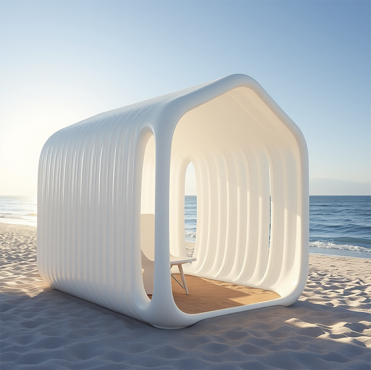

Free From UV
Fun Out Of The Sun!
By Ava Valenti
At Free from UV at Cottesloe, we bring the community together to build shaded huts using recycled materials and help people stay protected from the harsh Australian sun. With 2 out of 3 Aussies being diagnosed with skin cancer in their lifetime, we understand how important it is to take steps to stay sun-safe. we value sun safety and aim at doing our best to reduce skin cancer rates in Australia one step at a time. by building sun safe huts it gives everyone the opportunity enjoy fun-filled day at the beach without worrying about the harmful effects of UV rays.

Background
The issue at Cottesloe Beach is that there aren't enough shaded areas for visitors, causing people to either sit directly in the sun or crowd under the limited shaded spots available. This not only leads to discomfort and heat but also increases the risk of sunburn, skin damage, and long term health issues like skin cancer. the solution I have chosen is hosting a two day event to build shaded huts made from recycled materials. These huts will provide much needed shelter for visitors, allowing them to enjoy the beach safely without the danger of over exposure to the sun.
Promotional Video
My explainer video highlights the key events, dates, and times that I want viewers to remember. I’ve used vibrant, beachy colors throughout to create an energetic, positive vibe that mirrors the fun, exciting day volunteers will experience when they register. The goal of the video is to connect with my target audience, inspiring them to become part of the community and make a difference. I also hope it directs people to the Free from UV website, where they can register and learn more about the event and there impact and how they can help.
How it works!
The Free From UV app is an informative platform designed to educate users about the event. It provides all the essential details, including what to expect, event dates, key activities, and sponsors. The app also highlights the impact volunteers can make, showing them how their involvement contributes to the success of the event. Additionally, users can easily register for the event directly through the app. The app is simple and user freindly, it insures that users are fully orginised and prepard for the event from start to finish.
The Campaign

How are you going to reach your Target Audience/what is the campaign idea?
Why support us
Our event is 100% volunteer-run, and every contribution makes a lasting impact. These huts will stand on Cottesloe Beach for decades, protecting people from the sun and saving lives. By supporting us, you’re helping reduce skin cancer rates and making a difference for future generations.